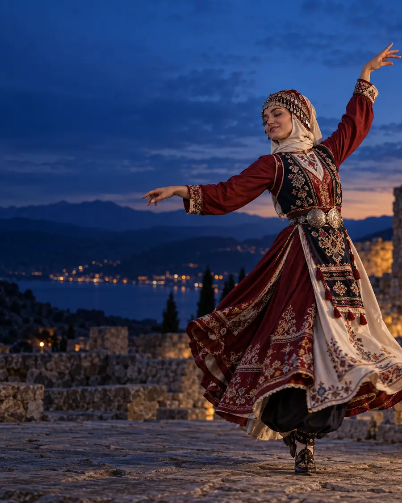
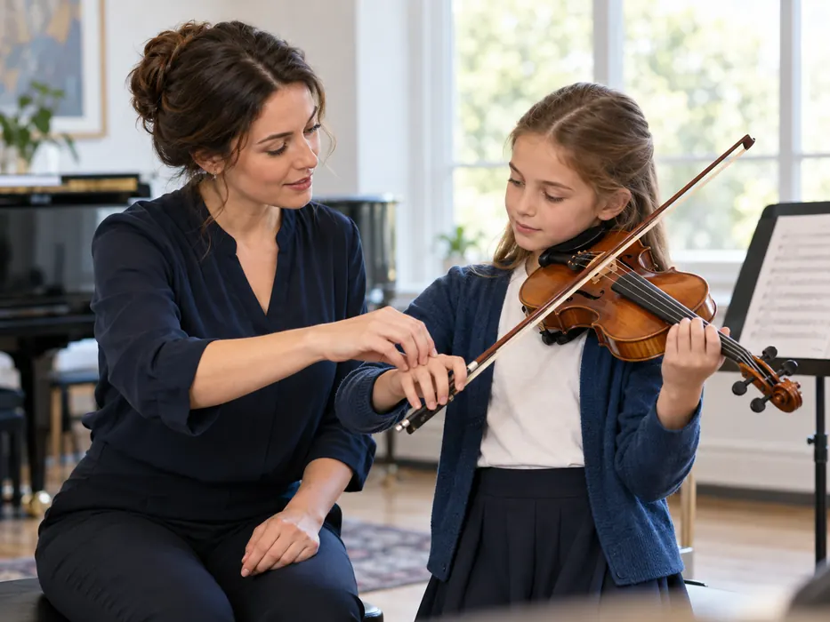
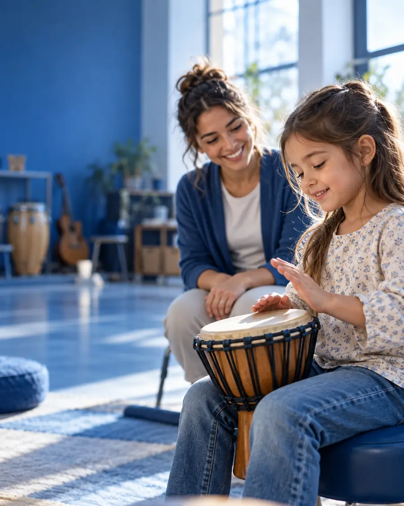

Sanat Eğitimi ve Performans Gelişimi
Dans, müzik, tiyatro ve sahne sanatlarında temel, ileri ve profesyonel gelişim.

KURUMSAL
Sanatta, sporda ve yaşamda potansiyeli birlikte geliştiriyoruz.
Nova’nın faaliyet alanlarında yer almak, doğrudan kayıt yoluyla gerçekleşmez.
Öğrenciler Türkiye genelinde gerçekleştirilen tarama ve çok aşamalı yetenek değerlendirme süreçlerinden geçer.
Örneğin 3.000 öğrencinin değerlendirmeye katıldığı bir süreçte:
Sanat alanında yalnızca 32 öğrenci, ( 16 kız öğrenci - 16 erkek öğrenci )
spor alanında da yalnızca 36 öğrenci ( 12 Kişi Basketbol- 12 Kişi Voleybol - 12 Kişi Futsal ) Nova’nın uzun vadeli gelişim programına kabul edilir.
Bu kontenjan sistemi, seçilen öğrencilerin gelişimlerinin yakından takip edilmesini ve eğitim kalitesinin yüksek standartlarda sürdürülebilmesini amaçlar.

Dans, müzik, tiyatro ve sahne sanatlarında temel, ileri ve profesyonel gelişim.
Öğrencilerin ritim, beden kullanımı, işitsel farkındalık ve ifade becerilerini birlikte geliştiren çalışmalarla sanatsal bir temel oluşturulur. Her öğrencinin ilgi alanı ve gelişim düzeyi, eğitim sürecinin yönlendirilmesinde dikkate alınır.
Bireysel çalışmalar ve grup provaları; yaratıcılığı, düzenli çalışma alışkanlığını ve sahne özgüvenini destekler. Amaç, öğrencinin yalnızca bir performans sergilemesi değil, kendi sanatsal dilini keşfetmesidir.
Teknik, fiziksel ve performans odaklı spor programları.
Branşa özgü teknik çalışmalar; koordinasyon, dayanıklılık, hareket becerisi ve oyun bilgisiyle birlikte ele alınır. Öğrencilerin yaşına ve gelişim düzeyine uygun bir çalışma ritmi oluşturulması hedeflenir.
Takım çalışmaları ve bireysel uygulamalar, disiplinli antrenman alışkanlığını ve sorumluluk bilincini güçlendirir. Gelişim sürecinde performans kadar sağlıklı spor alışkanlıkları, fair play ve takım arkadaşlarıyla iletişim de önem taşır.

Konser, gösteri, tiyatro ve büyük sahne prodüksiyonları.
Öğrenciler, bir sahne projesinin hazırlık aşamasından izleyiciyle buluşmasına kadar uzanan süreci tanır. Prova, repertuvar, sahne düzeni ve ekip içi görev paylaşımı, ortak bir üretimin parçaları olarak ele alınır.
Bu deneyimler; zamanı planlama, sorumluluk üstlenme ve birlikte üretme becerilerini destekler. Öğrencinin eğitimde kazandığı yetkinlikleri gerçek bir sahne ortamında kullanması ve performans deneyimini geliştirmesi amaçlanır.

Lig, turnuva, müsabaka ve yarışma deneyimleri.
Öğrencilerin eğitimde edindikleri becerileri farklı karşılaşma ve yarışma ortamlarında uygulamaları hedeflenir. Hazırlık sürecinde teknik gelişimin yanında strateji, odaklanma ve ekip uyumu üzerinde durulur.
Sonuçlar, öğrencinin gelişim yolculuğunun bir parçası olarak değerlendirilir. Kazanmayı ve kaybetmeyi olgunlukla karşılamak, rakibe saygı göstermek ve deneyimlerden öğrenmek bu yaklaşımın temelini oluşturur.

Festival, atölye, gösteri ve ortak kültür-sanat projeleri.
Farklı sanat disiplinlerini bir araya getiren etkinlikler, öğrencilerin yeni üretim biçimleriyle ve kültürel birikimlerle tanışmasına alan açar. Atölyeler ve ortak çalışmalar, izleyici olmanın ötesinde etkin bir katılımı teşvik eder.
Öğrencilerin merak duygusunu, estetik bakışını ve birlikte üretme isteğini geliştirmesi amaçlanır. Paylaşım ve etkileşim yoluyla sanatın günlük yaşamla kurduğu bağın güçlendirilmesi hedeflenir.

İletişim, özgüven, liderlik ve gelecek becerileri.
Öğrencinin kendini tanıması, düşüncelerini açıkça ifade etmesi ve başkalarını dinlemesi gelişim sürecinin önemli bir parçasıdır. Grup çalışmaları ve sorumluluk paylaşımı; iletişim, iş birliği ve problem çözme becerilerini destekler.
Hedef belirleme, zamanı yönetme ve değişen koşullara uyum sağlama üzerine çalışmalarla öğrencinin bağımsız hareket etme becerisi güçlendirilir. Bu kazanımların eğitim, sosyal yaşam ve gelecekteki kariyer yolculuğuna taşınması amaçlanır.

Uzmanlarla yürütülen çok yönlü öğrenci gelişimi.
Sanat, spor ve bilim arasında bağlantılar kuran çalışmalar, öğrencilerin gelişime farklı açılardan bakmasını sağlar. Gözlem, araştırma ve uygulama süreçleriyle merak etme ve soru sorma alışkanlığı desteklenir.
Uzmanlık alanları arasındaki etkileşim; hareket, öğrenme, yaratıcılık ve performans konularının birlikte değerlendirilmesine katkı sunar. Öğrencilerin bilgiyi yalnızca öğrenmesi değil, farklı alanlarda kullanabilmesi hedeflenir.

Küresel eğitim ve kariyer olanaklarına erişim.
Öğrencilerin farklı eğitim yaklaşımlarını ve kültürleri tanımasına katkı sağlayacak uluslararası deneyimler hedeflenir. Yabancı dil, kültürler arası iletişim ve bireysel portfolyo hazırlığı bu yolculuğun destekleyici unsurlarıdır.
İş birliği ve gelişim olanakları, öğrencinin ilgi alanları ve uzun vadeli hedefleriyle birlikte değerlendirilir. Amaç, öğrencinin kendi birikimini dünyaya açabilecek bir bakış açısı ve hazırlık kazanmasıdır.
Kültürel miras ve toplumsal sorumluluk deneyimi.
Öğrencilerin yaşadıkları çevreyi tanımaları ve toplumsal yaşamın bir parçası olarak sorumluluk almaları teşvik edilir. Kültürel değerler, dayanışma ve ortak yaşam bilinci, proje çalışmalarının temelinde yer alır.
Birlikte yürütülen çalışmalar; empatiyi, paylaşmayı ve farklılıklara saygıyı güçlendirir. Öğrencilerin sanat ve spor yoluyla kazandıkları becerileri toplumsal faydaya dönüştürmeleri ve çevreleriyle anlamlı bağlar kurmaları amaçlanır.

Noktalara tıklayarak sanat, spor ve gelişim alanlarımızı keşfedin.
Dans, müzik, tiyatro ve sahne sanatlarında temel, ileri ve profesyonel gelişim.
Teknik, fiziksel ve performans odaklı spor programları.
Konser, gösteri, tiyatro ve büyük sahne prodüksiyonları.
Lig, turnuva, müsabaka ve yarışma deneyimleri.
Festival, atölye, gösteri ve ortak kültür-sanat projeleri.
İletişim, özgüven, liderlik ve gelecek becerileri.
Uzmanlarla yürütülen çok yönlü öğrenci gelişimi.
Küresel eğitim ve kariyer olanaklarına erişim.
Kültürel miras ve toplumsal sorumluluk deneyimi.
Nova Sanat ve Spor Kulübü’nün eğitim, performans, sahne, müsabaka ve uluslararası gelişim faaliyetlerine yalnızca tarama ve yetenek değerlendirme süreçlerini başarıyla tamamlayan öğrenciler katılabilir.